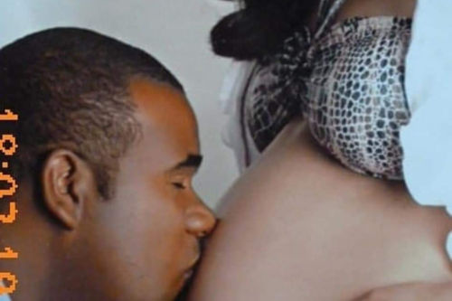

Meu nome é OTACÍLIO DA CUNHA REZENDE.
Sou morador da cidade de Caxambu/MG, tenho 37 anos, já exerci a profissão de Escrevente Substituto em dos melhores Cartório do Rio de Janeiro durante quase dez anos, hoje voltei a a minha cidade natal para poder estar mais perto dos meus pais.
Hoje sou estudante de programção, buscando mais conhecimento nessa área que está crescendo cada vez mais, estou aprendendo muito fazendo os cursos da plataforma do CursoemVideo com o professor GUSTAVO GUANABARA.
Vou conta um pouco da minha história de vida, sair de casa quando completei meus 18 anos lá em 2004, fui para um Estado diferente PARANÁ, morei numa cidade chamada LAPA, onde pude conhecer muitas pessoas do bem, amigos de verdade trabalhei numa empresa que na época chamava-se DEGRANJA, hoje ela tem um outro nome JBS, comecei como auxiliar de produção, e cheguei ao setor onde batalhei muito pra chegar sempre respeitando a todos INSPEÇÃO FEDERAL.
Ai conheci uma pessoa muito especial JOCIMARA JESUS RAQUEL, com ela minha vida melhorou e muito, só que ela morava em Caxias do Sul/RS, ela ficou gravida ai tomei a decisão de fazer um acordo e sair da empresa pra ir mora com ela lá e curti toda fase da gravidez dela, mais em 23/02/2012 nossa filha nasceu mais por complicações ela acabou ficando em côma e vinda a falecer vinte e seis dias depois, foi um momento muito triste para nois esperei a JOCI fica bem e decidir voltar pra minas por que eu precisava muito da minha familia.